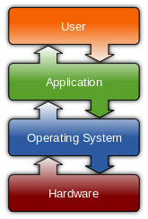
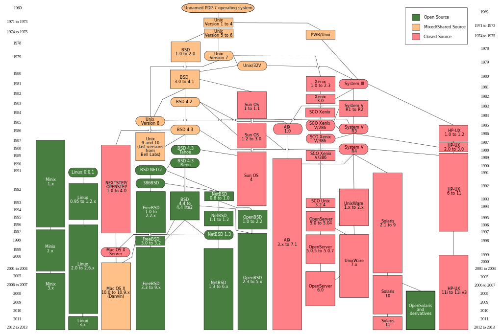

Week.01 : 리눅스/유닉스 계열 운영체제 및 응용 소프트웨어 Linux/Unix-Like Operating System and Application
Table of Contents리눅스/유닉스 계열 운영체제 및 응용 소프트웨어 Linux/Unix-Like Operating
공학도들은 운영체제를 직접 사용하지 않는다. 다만 그 위에서 작동하는 여러 프로그램을 사용한다. 그 위에서 작동하는 프로그램이 OS와 관계를 갖고 동작하는 것이다. 현재 대부분의 컴퓨터 사용자들이 MS사의 Window를 사용하여 컴퓨터를 운영하고 있다. 그렇지만 국제적인 컴퓨터 운영체제 표준은 Unix-Like이다. Window 또한 Unix에 영향을 받아 여러 가지 기능을 구현하였고, Unix 계열 OS들은 Unix 표준을 따르며 다원적인 경쟁체제를 통해 자체적인 성능향상을 해왔다. 그중 Linux는 오픈소스이며 Unix 계열 중 가장 많은 인지도를 가지고 있다.
본인이 이렇게 Linux에 대하여 홍보(?)하는 이유는 석사과정 학위과정 논문을 준비할 때부터 이다. MIKE SHE라는 프로그램을 사용하여 분포형 수문해석 모델링을 해보고 있었다. 연구실에서 구매한 지 꽤 오래된 소프트웨어라 Window XP에서만 사용할 수 있었다. UI 제어와 컴퓨터 간 데이터 입출력 문제 그리고 데이터 전처리 과정에 굉장한 시간과 노력이 들었다. 그래서 새로운 버전의 프로그램 구매가격을 알아보니 2천만 원 상당의 가격이었다. 내가 하는 게 연구가 무슨 나라를 구하는 연구도 아닌데 이렇게 비싼가. 그냥 검소한 석사과정 학생이 프로그램 깨작깨작 만져보고 싶었던 것인데 말이다. 문제는 그게 다가 아니었다. 프로그램의 운영 방법이 메뉴얼과 튜토리얼을 봐도 알기가 쉽지 않았다. 이에 대한 문제도 해답을 찾으려고 하면 홈페이지에는 돈을 내고 워크숍을 듣게끔 되어있었다. MIKE SHE를 제대로 사용하려면 소프트웨어에 지속적인 로열티를 내지 않으면 안되는 시스템이었다. 동시에 오픈소스라는 키워드를 접하고 여러 가지를 컴퓨터에 대하여 공부를 하기 시작했다. 그러다 내가 사용하는 해석 프로그램을 내가 직접 만들 수 있겠다는 생각을 가졌다. 그래서 수문해석 프로그램 개발이라는 주제로 박사과정을 시작했다. 그리고 내가 만든 프로그램은 성공한 프로그램으로 남기고 싶었다. 그래서 나는 Linux 기반에서 프로그램을 만들기로 했다. 왜냐하면, 프로그램은 운영체제에 의존적일 수밖에 없다. 그리고 그 운영체제에 대하여 나의 통제 능력이 없으면, 모든 문제해결방법에 대하여 고려할 가능성이 없어진다. 무너지지 않는 기반에 성을 쌓고 싶은 것이다. 본인은 Window가 언젠간 무너지리라 판단하였다. Window는 무너지지 않아도 지속해서 돈을 내야 하므로 연구비용을 절약하는 입장에서 상용소프트웨어는 배제하는 쪽이 나을 것이다.
그리고 내가 아는 한 거의 모든 대학원생이 Window 7 해적판을 사용한다. Matlab 또한 해적판을 사용하고 있다. 그리고 이 사실을 MS와 Mathworks는 알고 있다.
운영체제 Operating System

커널(Kernel), 셸(shell), 필수 유틸리티(Unix-command)
OS의 목적
- 사용자에게 컴퓨터의 프로그램을 쉽고 효율적으로 실행할 수 있는 환경을 제공한다.
- 컴퓨터 시스템 하드웨어 및 소프트웨어 자원을 여러 사용자 간에 효율적 할당, 관리, 보호하는 것
- 운영 체제는 제어 프로그램으로서 사용자 프로그램의 오류나 잘못된 자원 사용을 감시하는 것과 입출력 장치 등의 자원에 대한 연산과 제어를 관리한다.
유닉스 Unix
유닉스는 다양한 시스템 사이에서 서로 이식할 수 있고 멀티 태스킹과 다중 사용자를 지원하도록 설계되었다.
초기 개발자 : 켐 톰프슨[wik], 데니스 리치[wik], 브라이언 커니건[wik], 더글라스 매클로리[wie], 조 오산나[wie] (벨 연구소[wie])
상표권 : 오픈그룹 [wik]
저작권 : 노벨 [wik]
유닉스 계열 Unix-like
Unix-like [wie] 는 Unix 에서 파생되거나 영향을 받은 운영체제를 뜻한다.

Reference : img [Link]
{kind=link}
리눅스 Linux
[wik]
리눅스는 자유 소프트웨어와 오픈 소스 개발의 가장 유명한 표본으로 들 수 있다. 엄밀하게 따지면 이 ‘리눅스’라는 용어는 리눅스 커널만을 뜻하지만, 리눅스 커널과 GNU 프로젝트의 라이브러리와 도구들이 포함된, 전체 운영 체제(GNU/리눅스라고도 알려진)를 나타내는 말로 흔히 쓰인다. 리눅스 배포판은 핵심 시스템 외에 대다수 소프트웨어를 포함한다. 현재 200여 종류가 넘는 배포판이 존재한다.
Distrowatch : 오픈소스 Unix-Like 배포판 정보 웹페이지 [Link]
유닉스계열 운영체제를 추천하는 이유 The Reason Recommending Unix_like OS
- 자유롭게 사용 가능.
- 사용자의 선택에 의한 다원적 경쟁체제.
- 무료 배포판.
- OS 상호간 자체적인 이식성
소프트웨어 라이센스 Software License
소프트웨어 종류 Type of Software
오픈소스 라이센스 소프트웨어 Open Source License Software
Free Software : 공유와 수정의 자유를 보장하기 위한 규정을가진 소프트웨어 (GNU)
OpenSource Software : 소스가 공게되어 있으며, 사용자에게 사용, 복제, 수정, 배포의 자유가 있는 소프트웨어
사유 소프트웨어 Proprietary Software
Freeware : 무료 소프트웨어, 소스 미공개
Shareware : 초기에만 무료
Adware : 광고와 함께 사용
오픈소스 라이센스 Open Source License
GPL : GNU General Public License
보통의 소프트웨어 라이센스들이 SW에 대한 공유와 수정의 자유를 제한하려는 목적을 가진 반면에 GPL은 공유와 수정의 자유를 보장하기 위한 규정이다
자유 소프트웨어 재단(OSF)에서 만든 자유 소프트웨어 라이선스다. 미국의 리처드 스톨만(Richard Stallman)이 GNU-프로젝트로 배포된 프로그램의 라이선스로 사용하기 위해 작성했다. ① 컴퓨터 프로그램을 어떤 목적으로든지 사용할 수 있다
② 컴퓨터 프로그램의 복사를 언제나 프로그램의 코드와 함께 판매 또는 무료로 배포할 수 있다
③ 컴퓨터 프로그램의 코드를 용도에 따라 결정할 수 있다
④ 변경된 컴퓨터 프로그램 역시 프로그램의 코드와 함께 자유로이 배포할 수 있다'라는 네 가지 조항을 명시하고 있다.
GNU 일반 공중 라이선스는 자유 소프트웨어를 공유하고 수정할 수 있는 자유를 보장하기 위해 의도되었다. 즉, 소프트웨어가 사용자 모두에게 자유롭게 이용될 수 있도록 하는 것이다. 이 일반 공중 라이선스는 자유 소프트웨어 재단의 소프트웨어 대부분을 비롯하여, 저작자가 이 라이선스의 사용을 지정한 기타 모든 프로그램에 적용된다. 누구나 자신의 프로그램에 이 라이선스를 적용시킬 수 있다.
LGPL : GNU Lesser General Public License
LGPL 코드를 정적(static) 또는 동적(dynamic) 라이브러리로 사용한 프로그램을 개발하여 판매/배포할 경우에 프로그램의 소스코드를 공개하지 않아도 된다. LGPL 코드를 사용했음을 명시만 하면 된다. 단, LGPL 코드를 단순히 이용하는 것이 아니라 이를 수정한 또는 이로부터 파생된 라이브러리를 개발하여 배포하는 경우에는 전체 코드를 공개해야 한다.
BSDL : Berkeley Software Distribution License
소스를 가져다가 마음대로 바꿔 소스 공개를 하지 않은 채 상업적으로 이용해도 아무런 제약이 없다. 원 저작자 이름만 표기해 주면된다.덕분에 기업 사용자들이 좋아한다.
MITL : MIT License
MIT 라이선스(MIT LICENSE)는 미국 매사추세츠 공과대학교(MIT)에서 해당 대학의 소프트웨어 공학도들을 돕기 위해 개발한 라이선스다. MIT 라이선스를 따르는 소프트웨어를 개조한 제품을 반드시 오픈 소스로 배포해야 한다는 규정이 없으며 GNU 일반 공중 라이선스의 엄격함을 피하려는 사용자들에게 인기가 있다.
MPL : Mozilla Public License
MPL은 Netscape 브라우저의 소스코드를 공개하기 위해 개발된 라이센스이다. MPL은 공개하여야할 소스코드의 범위를 좀더 명확하게 정의하였다. GPL에서는 링크되는 소프트웨어의 소스코드를 포함하여 공개하여야 할 소스코드의 범위가 모호하게 정의되어 있지만 MPL에서는 링크 등의 여부에 상관없이 원래의 소스코드가 아닌 새로운 파일에 작성된 소스코드에 대해서는 공개의 의무가 발생하지 않는다. 따라서 MPL 소프트웨어 그 자체는 어떻게 하든 공개를 해야 하지만 원래 소스코드에 없던 새로운 파일들은 공개하여야 할 의무가 발생하지 않으므로 GPL에 비해 훨씬 명확하다. 주요 내용을 요약하면 다음과 같다.
- 소프트웨어를 배포하는 경우 저작권 표시, 보증책임이 없다는 표시 및 MPL에 의해 배포된다는 사실을 명시
- MPL 코드를 수정한 부분은 다시 MPL에 의해 배포
- MPL 코드와 다른 코드를 결합하여 프로그램을 만들 경우 MPL 코드를 제외한 결합 프로그램에 대한 소스코드는 공개할 필요가 없음
- 소스코드를 적절한 형태로 제공하는 경우, 실행파일에 대한 라이센스는 MPL이 아닌 다른 것으로 선택가능
- 특허기술이 구현된 프로그램의 경우 관련 사실을 ‘LEGAL’파일에 기록하여 배포
EPL : Eclipse Public License
Eclipse Public License (EPL)는 오픈소스라이선스로 Eclipse 재단에서 자사의 소프트웨어를 위해 사용된다.이 라이선스는 Common Public License (CPL) 을 대체하며 특정용어등과 관련된 특허소송침해건을 제거했다.EPL은 GPL보다 약한 상호주의(copyleft)조항을 가지고 있어 기업친화적인 오픈소스 라이선스로 설계가 되었다.
Referece Link
- Choosealicense.com [Link]
- OLIS : Opensource License Information System [Link]
- OSS Korea [Link]
- KLDP.오픈소스 소프트웨어 라이센스 가이드 [Link]
저작물 라이센스 Contents License
CCL : Creative Common Licence

크리에이티브 커먼즈 라이센스(Creative Commons license)는 특정 조건에 따라 저작물 배포를 허용하는 저작권 라이선스 중 하나이다
조합
- 저작자 표시(BY)
- 저작자 표시-비영리(BY-NC)
- 저작자 표시-비영리-변경 금지(BY-NC-ND)
- 저작자 표시-비영리-동일조건 변경 허락(BY-NC-SA)
- 저작자 표시-변경 금지(BY-ND)
- 저작자 표시-동일조건 변경 허락(BY-SA)
BY : Attribution (저작자 표시)
NC : Noncommercial (비영리)
ND : No Derivative Works (변경금지)
SA : Share Alike (동일조건변경허락)
- CCL만들기 Choose License [Link]
리눅스 시작 Start Linux
- Linux OS 설치
- Linux 듀얼 부팅
- Linux 가상머신에 설치 - Virtualbox
- Cygwin / MinGW
리눅스 설치 Install Linux
2014년도에 재미 삼아 만든 리눅스 민트 설치 동영상이다.
- 리눅스 민트 부팅USB만들기(리눅스.민트에서...) [ytube]
- 리눅스 민트 부팅USB만들기(윈도우에서...) [ytube]
- 리눅스 민트 설치 [ytube]
- 리눅스 민트 한글입력기설치 : 벼루 [ytube]
- 리눅스 민트 테마꾸미기 [ytube]
- 리눅스 민트 시작프로그램설정 [ytube]
- 리눅스 민트 단축키설정 jumpapp [ytube]
- 리눅스 민트 네트워크설정 [ytube]
가상머신(버추얼박스)에 리눅스 설치 Install Linux in Virtualbox
- 리눅스.민트 홈페이지에서 민트를 다운 : 리눅스 민트 홈페이지 [Link]
- VirtualBox 홈페이지에서 vertualbox 를 받고 설치 [Link]
- VirtualBox 에서 리눅스 민트 가상공간 설치
- Virtualbox 실행 후 새로만들기 클릭
- 가상 머신 만들기 > 이름 및 운영 체제에서 원하는 이름 입력
- 종류 Linux 선택
- 버전 Linux 2.6 / 3.x (64 bit) 혹은 최신버전선택 후 다음 클릭
- 메모리 크기 설정 1G추천
- 하드 드라이브에서 ‘지금 가상 하드 드라이브 만들기’ 선택 후 만들기 클릭
- 하드 드라이브 파일 종류에서 VDI 선택 후 다음 클릭
- 물리적 하드 드라이브에 저장에서 동적할당 혹은 고정 크기 선택 (고정 크기 추천) 후 다음 클릭
- 파일 위치 및 크기에서 가상하드가 위치할 디렉토리 설정 및 가상하드크기 선택 후 만들기 클릭
- 리눅스 민트 설치
- VertualBox에서 리눅스 민트 선택 후 시작 클릭
- 리눅스 민트 바탕화면이 나오면 ‘Install Linux Mint 더블 클릭
- Welcome부분에서 English 선택 후 continue 클릭
- Preparing to install Linux Mint부분에서 Continue 클릭
- Installation type부분에서 Erase disk and install Linux Mint 선택 후 Install Now 클릭
- Where are you?부분에서 Seoul선택 후 Continur 클릭
- Keyboard layout부분에서 Korean > Korean (101/104 Key compatiable)선택 후 Continue 클릭
- Who are you?부분에서 컴퓨터 정보 입력 후 Continue 클릭
- 설치가 완료되면 Restart Now 클릭
Cygwin과 MinGW
CygWin
[Link]
시그윈(Cygwin; IPA: /ˈsɪgwɪn/)은 원래 시그너스 솔루션스가 개발한 자유 소프트웨어 모음집으로, 다양한 버전의 마이크로소프트 윈도에서 유닉스 계열이 동작하도록 고안된 에뮬레이터이다. GNU GPL로 배포되어 자유롭게 사용할 수 있다.
Reference : 위키백과.시그윈 [wik]
MinGW
[Link]
MinGW는 마이크로소프트 윈도로 포팅한 GNU 소프트웨어 도구 모음이다.
Reference : 위키백과.MinGW[wik]
응용 소프트웨어 Application Software
AlternativTo : Social software recommendations [Link]
내가 쓰고 있거나 쓰려고 하는 소프트웨어의 같은 목적을 가지고 있는 소프트웨어들을 비교해 주고 대체해주는 웹사이트이다.
Libre Office : 오픈소스 크로스 플랫폼 오피스 프로그램 [Link]
Gimp : 이미지 편집기 [Link]
Master PDF Editor : [Link]
Github : 프로젝트 관리 저장소 [Link]
Zim-desktop-wiki : 개인 위키관리 시스템 [Link]
vim : 텍스트 에디터 [Link]
Firefox-Development-Edition : 웹브라우저 [Link]
-
Firefox Addons
- Addon > VimFx : Vim-style keyboard shortcuts for browsing and navigation [Link]
- Addon > Adblock Plus : Blocks annoying video ads on YouTube, Facebook ads, banners and much more [Link]
- Addon > LastPass : Saves your passwords and gives you secure access [Link]
- Addon > TreeStyle Tab : [Link]
- Addon > ScrapBook : Helps you to save Web pages [Link]
- Addon > Sticky Notes : Put sticky notes on the web page [Link]
볼거리 Things to See
- Revolution OS [Link]
- The Internet's Own Boy: The Story of Aaron Swartz [Link]
- The Code: Story of Linux documentary [Link]
- Open Access Explained [Link]
Reference
[1] 위키백과(운영체제). http://ko.wikipedia.org/wiki/운영_체제
[2] OLIS. https://www.olis.or.kr/
[3] CCKorea. http://www.cckorea.org/xe/ccl
All content & design on this site Copyright © 2015, Kiwon
kiwon@null.net

Cho, Kiwon에 의해 작성된 Programming Application은 크리에이티브 커먼즈 저작자표시 4.0 국제 라이선스에 따라 이용할 수 있습니다.